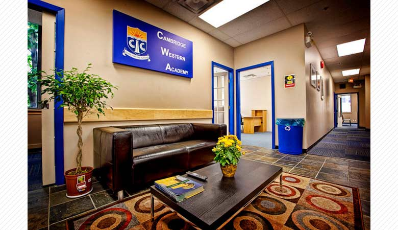

ケンブリッジ ウェスタン アカデミー（CWA）
オーストラリアで15年の歴史を持つCambridge International Collegeが開校した学校です。
実績と経験を活かして、2010年6月にはバンクーバーに新しいキャンパスをオープンしました。
CWAはバンクーバーのダウンタウン、リチャードストリートとウェストヘイスティングストリートの角に位置しています。
ウォーターフロント駅から徒歩1分、ショッピング街やレストランまで徒歩圏内にあり、
どのエリアからも通学しやすい便利な場所にあります。
エネルギーのCWAマネージメント
学長、マネージャー、オペレーションマネージャーなど、全体的に若く経験のあるチームで開校したCWAは、
新しい目線で生徒たちがこんな環境で学びたいというニーズに合う学校つくりをしています。
J.E.E.P.インターンシップ・職種経験プログラム
ケンブリッジウェスタンアカデミー（CWA）では英語を学び、バンクーバーで働く経験が得られるプログラムを開講しています。
カナダでのビジネスルールやマナーを学んだ後、学校で学んだ英語を実際使えるフィールドをCWAが提供致します。
CWA 日記
入学時に当校のロゴが入った日記が渡され、毎日の課題として日記を付け、先生に提出します。
文法、表現方法を習得し、ライティングスキルを上達させる目的の他、生徒と講師のコミュニケーションを図るツールとしても使われます。
小人数制
生徒全員が授業中に気軽に質問、発言ができ、講師が生徒一人一人に目が届くクラス体制を作るため、
クラス人数は現在平均8名、最大1４名までの小人数制になっております。
CWA Activity
コーディネーターが企画するアクティビティーを毎日開催しており、世界各国から来ている学生間の交流を促し、
またカナダでの生活を更に充実させるための役割を担っています。
きめ細やかなカウンセリング
生徒全員に目を行き届かせ、仕事探し、大学への進学相談、留学生活でのサポートなどを行っている
日本人カウンセラーが常駐しています。
画面をクリックするとビデオが再生されます。
＜We are CWA-Japan Fundraiser＞
画面をクリックするとビデオが再生されます。
＜We are CWA introducing CWA staff＞